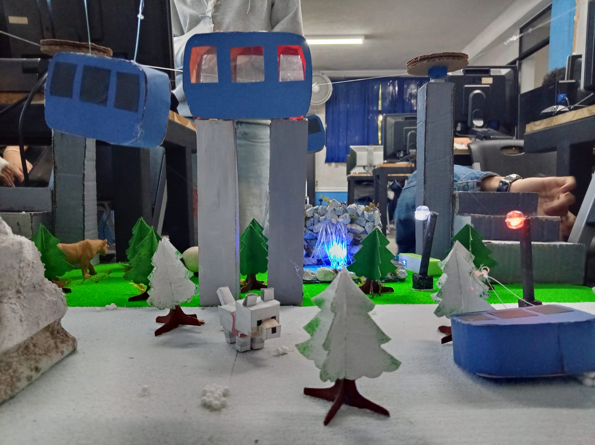
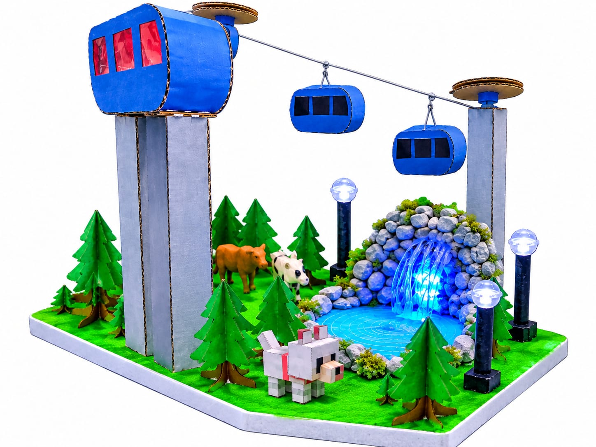
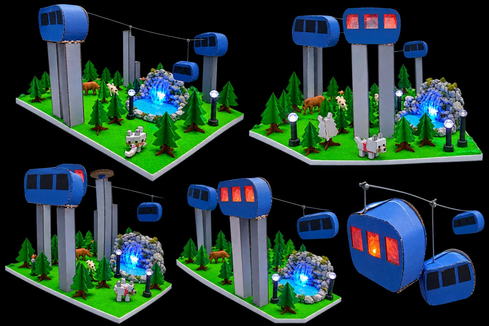
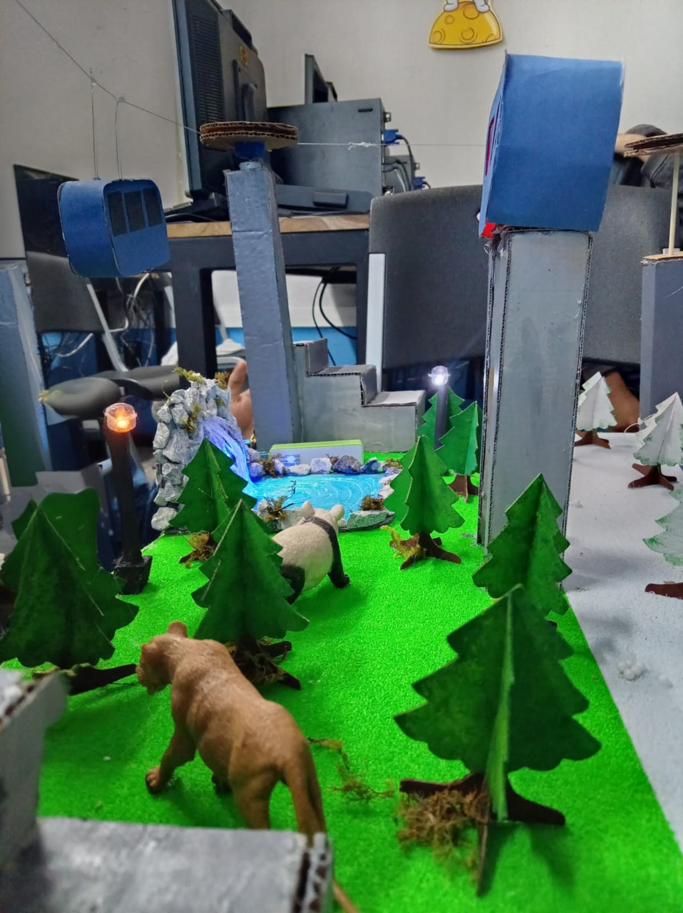
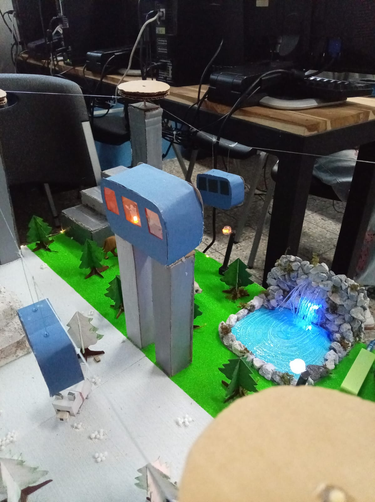
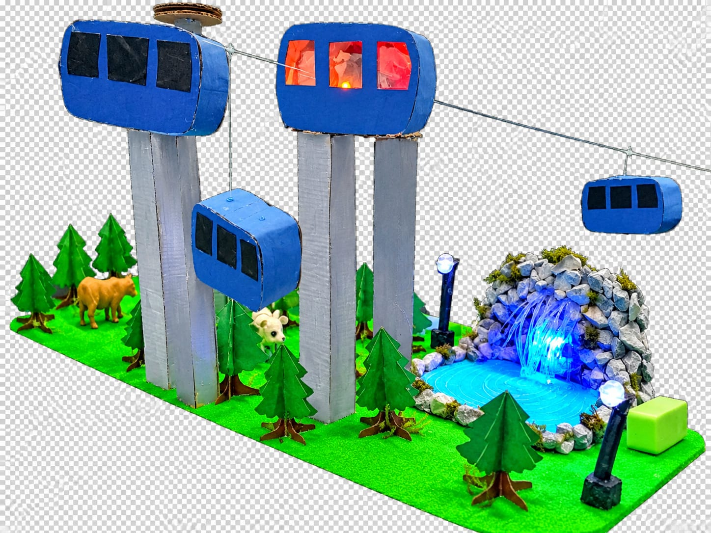
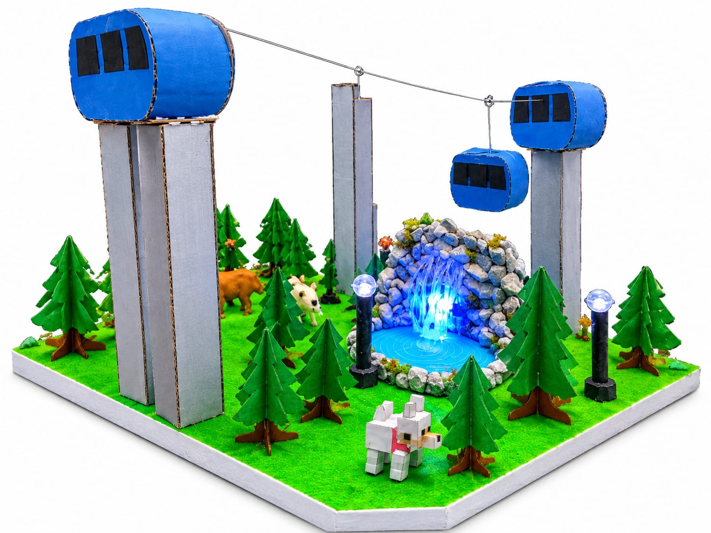

Montaña y estación de esquí - Q1,250.00
Representa el uso del teleférico como medio de transporte para conectar zonas elevadas y facilitar el acceso a estaciones de esquí y áreas montañosas.

En MecaEnergyCorp desarrollamos soluciones que demuestran cómo la energía mecánica puede convertirse en movimiento, transporte y nuevas oportunidades de conexión.
Conocer el proyecto
MecaLift 01 es una propuesta de transporte por cable diseñada a escala mediante una maqueta funcional. Su propósito es representar el funcionamiento de un sistema de teleférico, utilizando principios de la energía mecánica para generar y transmitir movimiento.
El proyecto contempla tres escenarios independientes: una zona montañosa con estación de esquí, un espacio recreativo y un entorno natural de bosque. Cada escenario representa una posible aplicación de este tipo de transporte en diferentes entornos.
Mediante un sistema de control electrónico basado en Arduino Uno, buscamos demostrar cómo la tecnología puede facilitar el control del movimiento y el funcionamiento de los mecanismos.
Nuestro modelo representa diferentes lugares en los que un sistema de transporte por cable puede aportar movilidad y facilitar el desplazamiento.

Representa el uso del teleférico como medio de transporte para conectar zonas elevadas y facilitar el acceso a estaciones de esquí y áreas montañosas.

Muestra cómo el transporte por cable puede conectar diferentes puntos de interés, facilitando el desplazamiento de visitantes en espacios turísticos y recreativos.

Representa una alternativa de conexión entre diferentes áreas naturales, aprovechando un recorrido elevado mediante un sistema de transporte por cable.
El funcionamiento de la maqueta se basa en la transformación y transmisión de energía para producir movimiento mediante mecanismos de accionamiento y control.
El usuario selecciona el escenario y activa el sistema mediante los controles disponibles.
El Arduino Uno procesa las señales recibidas y controla el funcionamiento del módulo correspondiente.
Los motores DC con reductora accionan los mecanismos encargados de transmitir el movimiento al sistema de transporte.
El sistema representa el desplazamiento de la cabina y utiliza finales de carrera para detectar posiciones y controlar los límites del recorrido.
Nota: No solo conectamos dos destinos, conectamos oportunidades de emprender
Para construir y controlar nuestro prototipo utilizamos diferentes componentes electrónicos y mecánicos que trabajan conjuntamente.
Placa electrónica encargada de procesar las instrucciones y controlar el sistema.
Generan el movimiento mecánico necesario para accionar los módulos.
Permiten controlar el funcionamiento de los motores mediante las señales del Arduino.
Detectan posiciones límite y permiten controlar los extremos del recorrido.
Permiten al usuario interactuar con el prototipo y seleccionar sus funciones.
Proporcionan señales visuales sobre el estado o funcionamiento del sistema.
Proporciona la energía eléctrica necesaria para los componentes del sistema.
Incluye la estructura, poleas, cable y cabina que representan el transporte.
El desarrollo de MecaLift 01 contempla diferentes etapas de diseño, programación, montaje y pruebas para conseguir un prototipo funcional.
Definición de los escenarios, dimensiones, estructura y funcionamiento del prototipo.
Preparación de los circuitos y conexión de los componentes de control.
Desarrollo del código para controlar los motores y las funciones de cada módulo.
Elaboración de la estructura física e instalación de los mecanismos.
Verificación del movimiento, los controles y el funcionamiento independiente de cada escenario.
Un registro visual del proceso de diseño, construcción y desarrollo de MecaLift 01.



Con MecaLift 01 buscamos demostrar la aplicación práctica de la energía mecánica mediante un sistema de transporte por cable a escala, integrando conocimientos de mecánica, electrónica y programación.